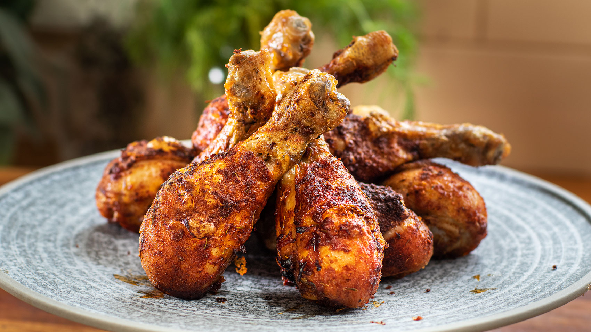

Chicken Drumsticks
This is just a great, simple baked chicken drumsticks recipe you can get in the oven quickly. A 3-ingredient seasoning adds terrific flavour and colour. Meanwhile, the secret to a lovely crispy skin is a touch of baking powder.

Ingredients
- 1 tsp smoked paprika
- 1/2 tsp garlic powder
- 1/4 tsp onion powder
- 1/8 tsp cayenne pepper
- 1/4 tsp dried oregano
- 1/2 tsp salt
- 1/4 tsp freshly cracked black pepper
- 1.75 lbs. chicken drumsticks (6 pieces)
- 2 Tbsp cooking oil
Directions
- Preheat the oven to 425ºF. Combine the smoked paprika, garlic powder, onion powder, cayenne pepper, oregano, salt, and pepper in a bowl.
- Place the chicken drumsticks in a bowl and drizzle the cooking oil over top. Sprinkle the prepared seasoning over the drumsticks, then toss until they're evenly coated in oil and spices.
- Place the seasoned drumsticks on a baking sheet with enough space around each so they're not touching. You can line the baking sheet with foil or parchment for easier cleanup, if desired.
- Transfer the chicken to the oven and bake for 40 minutes, or until they reach an internal temperature of 175ºF, flipping the drumsticks once half-way through. Serve hot.
Tips
You can use your favorite high-heat cooking oil.
Try to choose ones that are uniform in size, so that they cook at the same rate
If you haven't had chicken cooked in the air fryer," according to Nicole, "you're missing out.
Return Home Page